A touring exhibition · Proposed first venue: TextielMuseum, Tilburg
RecollectedDwellings
What shape must our memories take for our histories to become visible?
Thirteen artists work with recollection, in thread, cloth and fibre, as an intervention in the structures that decide whose past is remembered.
Exhibition proposal · Bjarne, Fiona, Lola & Marije · Doing Modern and Contemporary Art, University of Amsterdam · October 2026
- Opens
- 5 March 2027 (proposed)
- First venue
- TextielMuseum, Tilburg (proposed)
- Then
- Touring to further venues
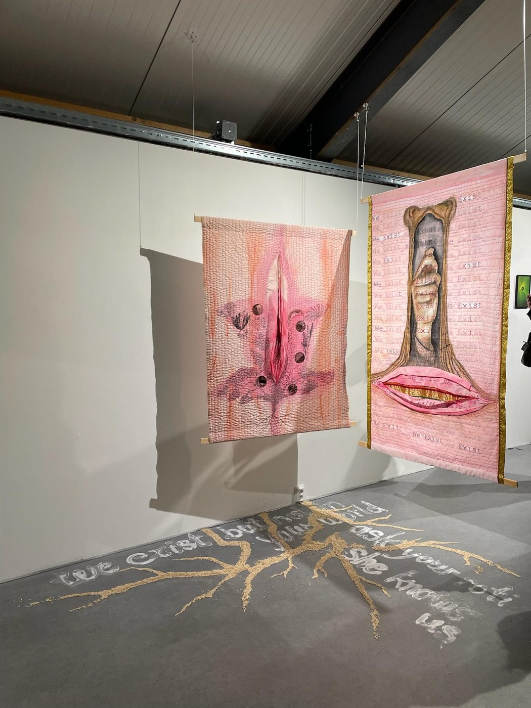
The exhibition
Whose past is remembered?
Recollected Dwellings introduces thirteen artists who work with recollection as an intervention within dominant and hierarchical sociopolitical structures.
Carol Duncan describes the art museum as a ritual site “affirm[ing] the goal of communion with immortal spirits of the past.” This exhibition asks which spirits, from whose past, count as valid in the museum today, and proposes other forms of memory that connect with peripheral pasts. Across coloniality, marginalisation, diaspora and gender, the artists investigate how embodied memory can work as a process of reckoning, reconciliation and preservation for communities and bodies at risk.
The artists work in soft sculpture, mixed media and installation, with textile as their main medium. Long treated as craft or women's work rather than fine art, fibre shares the marginal status of the experiences it records. Memory locked into the rhythms of making becomes a new archive for the peoples left out of history, and the softness of fibre resists the hardness of systematic categorisation.
Counted by hand
The artists
Thirteen artists, two perspectives
The exhibition looks at memory from two sides. The communal follows cultural and intergenerational memory and the collective making that holds it together. The personal starts from the home, as a domestic space and as the body.
The communal
Personal memory becomes a shared site, and fragments across communities and generations come together into an abstracted “home” for stories whose tangible places are out of reach.
The personal
The home, as a domestic space and as body and flesh, where personal memory is compromised by friction with power structures and dominant narratives.
Historical & socio-political context
Histories in the cloth
The works do not treat textile as a neutral or decorative material, but as a record, and as evidence of knowledge that colonial institutions failed to preserve.
Power, colonialism & resistance
Before European industrialisation, South Asian cottons dominated global trade, and demand for Indian calicoes and chintzes led Britain to restrict their import with the Calico Acts of the early eighteenth century. As the East India Company took political control of the subcontinent, the relationship reversed: Indian cotton was exported as raw material and machine-made Lancashire cloth sold back to India. Indian cloth became a currency of the Atlantic slave trade, and Dutch and French traders also used cotton textiles to purchase enslaved people.
Garment production is now concentrated in countries such as Bangladesh, Vietnam and Cambodia, where the low-paid, under-protected work is mostly done by women. In Canada, the Indian Act and the residential school system sought to break the transmission of skills, language and ceremony; beadwork is one of the practices that resisted, and that Nico Williams reclaims.
Expanding womanhood
In early modern Europe a tapestry could cost more than a painting. From the Renaissance, painting and sculpture were raised to intellectual arts while women were kept out of academic training, and needlework became a domestic, “feminine” pastime, a division that hardened in the nineteenth century. This history is not universal: in many non-Western contexts textile work carries other gendered meanings.
From the 1960s feminist artists reclaimed textile, as in Judy Chicago's The Dinner Party (1974–79), while Black feminist writers criticised the essentialism and white feminism of such work. Kablusiak connects skin-sewing to queer and Indigenous identities, so the exhibition treats womanhood as a field that includes queer, non-binary and cross-cultural experience.
The exhibition as a political space
Selection, framing, location and display shape what is remembered. Brian O'Doherty shows how the white cube presents art as timeless and detached while concealing the ideology behind it. The factory setting is a deliberate counterpoint, and because industrial spaces can be aestheticised too, it is combined with domestic cues and clear credits to the makers.
Cultural & intergenerational memory
A garment, an embroidered cloth or a woven mat preserves traces of those who made and used it, and techniques pass between generations through touch and practice. These memories survive in objects and skills within the home and the community, which is why the exhibition takes a domestic form.
The venue
A textile factory in Tilburg
The proposed first venue is the TextielMuseum in Tilburg, housed in the former factory of the woollen-cloth firm C. Mommers & Co., a national monument built by Christiaan Mommers, the son of a home weaver.
Still a factory
In the TextielLab, artists and designers develop their work with the lab's product developers and technical specialists. The museum's exhibition series Secrets of Making addressed the division of roles in that collaboration, the question Yee I-Lann's TIKAR/MEJA raises too.
Work done at home
Women did the spinning, carding, burling and mending, men the weaving. Married women were later kept out of the factories and mended cloth at home for lower pay.
Wool production around Tilburg long remained a home industry. Women did the spinning, carding, burling and mending, and men the weaving. When production moved into the factories, married women were kept out under pressure from the Catholic clergy, and many went on burling and mending at home for lower pay.
Invisible by design
Mending meant weaving missing threads into the cloth so that the repair could hardly be seen, which made this work invisible in a literal sense. This is the kind of labour the exhibition sets out to make visible.
The building
- Former woollen mill
- Working TextielLab
- Installed room
The home
- A bed
- A pouf
- A low stand
- A kitchen table
The works
- Translucent fabricDo Ho Suh
- Pandanus leafYee I-Lann
- Antique quiltsGina Adams
- Glass beadsNico Williams
- Embroidery on cottonMeita Meilita
Home and factory
In the old factory we install the room from our 3D model, entered through Do Ho Suh's Nest/s and furnished as a home. A domestic interior inside a former textile factory brings together the two settings in which this labour took place. After Tilburg the exhibition travels on.
Exhibition design & visitor journey
A home inside the factory
You enter through Do Ho Suh's Nest/s into one room, furnished as a home. A bed, poufs, a low stand and a kitchen table set it as a domestic interior; the works sit on the furniture, the walls and the floor, with a screen for each artist film beside them.
A domestic interior inside a former textile factory brings together the two settings in which this labour took place.
- Do Ho SuhEntrance, walk through
- Labay EyongBeside the houses
- Woo HannahIn the alcove
- Rucha KulkarniBack wall, by the alcove
- Meita MeilitaBack wall, curved
- KablusiakOn the round bed
- Zoë BuckmanBack wall, above the table
- Igshaan AdamsFreestanding corner wall
- Gina AdamsSide wall
- Elfreda DaliSide wall and corner
- Nico WilliamsOn the low stand
- Yee I-LannOn the floor, centre
- Hema ShironiEntrance wall, by the houses
The 3D model
Walk through the room
In through Do Ho Suh's Nest/s and past every work in the room, as it would be installed in the old factory.
Artist films & Memory Archive
The voices of makers and visitors
This website introduces the artists and the practical side of a visit. In the gallery, screens beside the works show the artists talking about how each work was made and who made it with them.
Artist film
Nico Williams
The Memory Archive
Bring a memory
At a recording station in the exhibition, or from home through this website, record two minutes about an object of cloth or thread that holds a memory for you: a blanket from a grandparent, or the tablecloth that always lay on the table at home. Other visitors listen to the recordings in the exhibition.
City by city
Because the exhibition travels, the archive grows with every venue, so that each city adds its own stories. It does with spoken memories what the exhibition attributes to textiles: it keeps what official records tend to leave out.
Curatorial framework
Reading the museum
Four texts from the course shape how the exhibition is built.
Carol Duncan
“The Art Museum as Ritual”
The museum as a ritual site of communion with the spirits of the past. The exhibition asks whose spirits, and from whose past.
Tony Bennett
“The Exhibitionary Complex”
Exhibitions organise how objects and people are presented, and can set up hierarchies between those who produce knowledge and those whose knowledge is put on show.
Brian O'Doherty
“Inside the White Cube”
The white cube hides its ideology behind neutrality. The factory-and-home setting gives the works back a lived context.
Erica Robenalt
Queer feminism at the Schwules Museum
Museum practice that recognises lived experience and community knowledge, including expertise that institutions may not traditionally acknowledge.
Plan your visit
Visit Recollected Dwellings
Proposed for the TextielMuseum in Tilburg from 5 March 2027. Timed tickets keep the room calm.
- Dates
- 5 March – 29 August 2027Proposed; first stop of the tour
- Venue
- TextielMuseum, Tilburg (proposed). The exhibition then travels to further venues.
- Tickets
-
- Adult€17.50
- Student (with ID)€9.00
- Under 18Free
- Friends of the exhibitionFree
- Opening hours
- Tuesday to Friday 10:00–17:00
Saturday and Sunday 12:00–17:00
Closed on MondaysThe TextielMuseum’s current hours - Access
- Step-free route through the room, seating along the way and large-print labels.
- Time
- Allow 75 minutes, plus time at the Memory Archive.
Tickets
Book a time slot
Choose a day and an entry time.
The exhibition catalogueEssays, wall texts and full-page plates of all thirteen artists. Pre-order, €35.
Recollected Dwellings · An exhibition proposal
Thank youQuestions?
Bjarne, Fiona, Lola & Marije · Doing Modern and Contemporary Art · University of Amsterdam
Artist pages follow →
The communal · I
Indigenous histories
Textile-based practices that explore Indigenous identity and challenge the narratives through which Indigenous histories have been represented.
Nico Williams · Kablusiak · Gina Adams
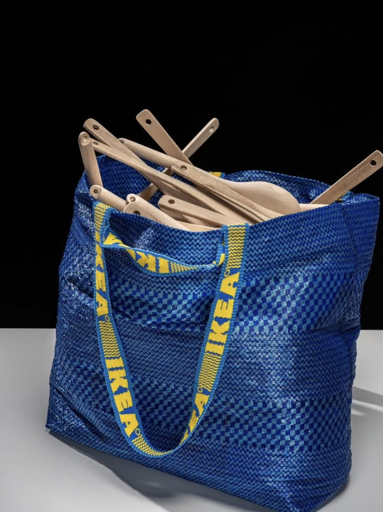
Nico Williams, Feast, 2024. 10/0 Delica beads, 11/0 seed beads, 49 wood spoons
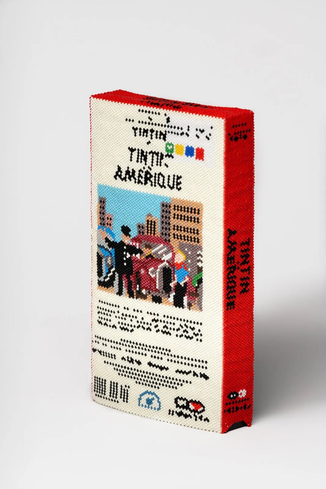
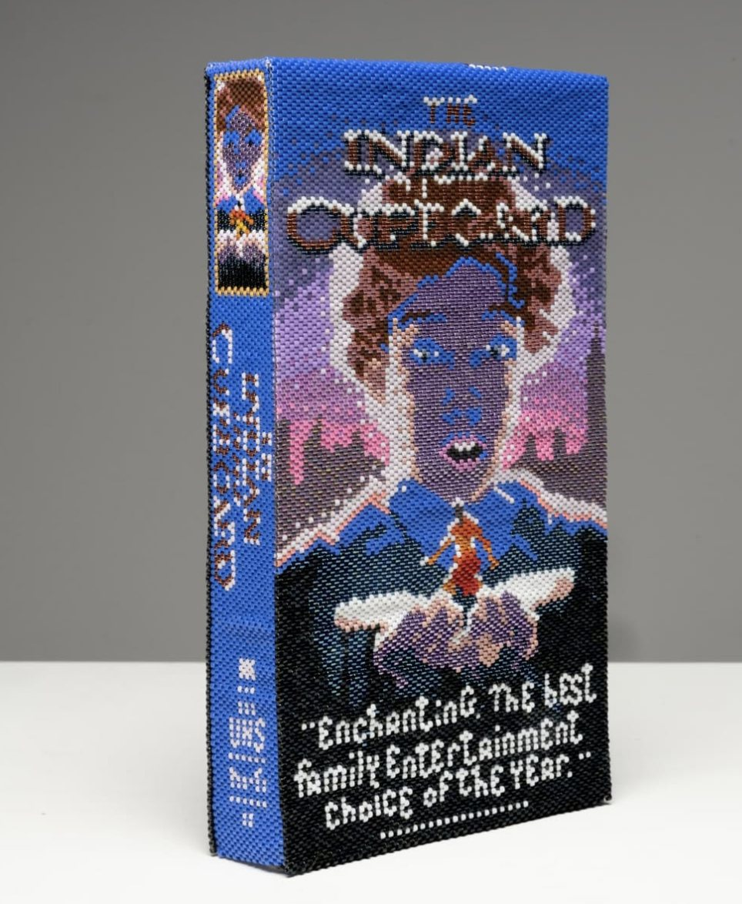
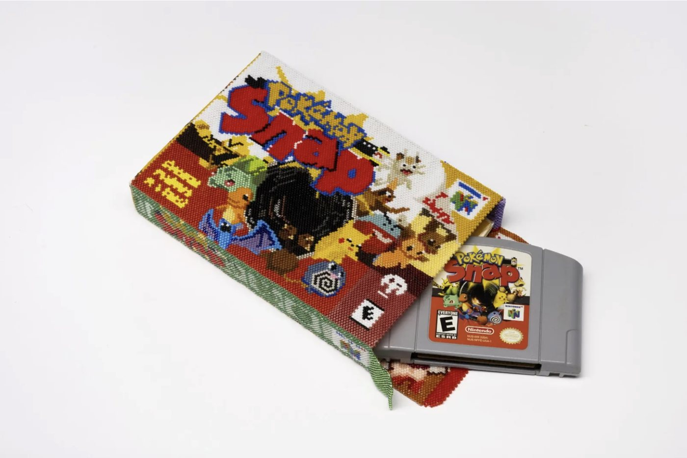
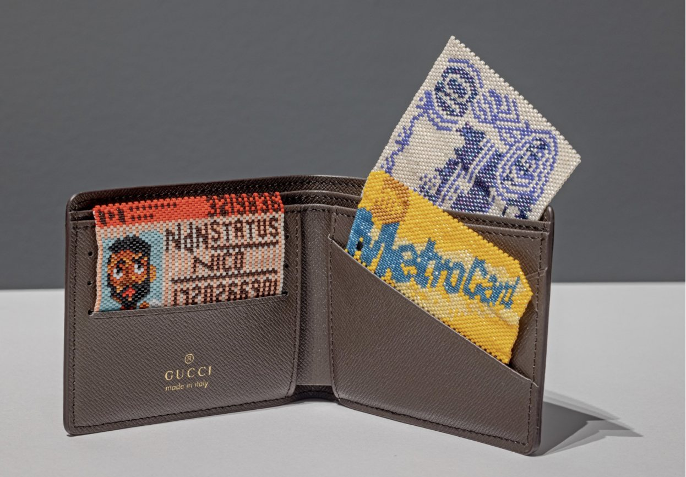
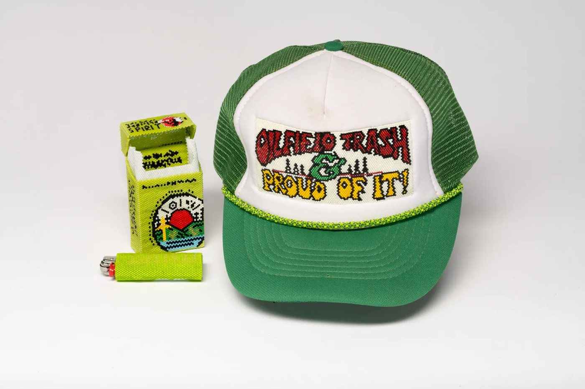
TINTIN EN AMERIQUE, 2025, Japanese cylindrical glass beads on polyethylene thread, VHS cassette · The Indian in the Cupboard (1995), 2024, beads, original VHS tape, thread · POKÉMON SNAP!, 2025, glass beads, thread, plastic game case · NDN Status Cards, 2019–, glass beads, mixed materials · NDN MARKET ESSENTIALS, OLD FIELDS AND PROUD OF IT (GREEN), 2025
Nico Williams
Nico Williams uses beadwork and traditional materials to address cultural reclamation, while works such as Cousins (2023) evoke familial relationships and shared experiences. At Hochelaga studio he works year round with a team of seven to eleven people, an approach he describes as caretaking.
- On view
- Feast, 2024; TINTIN EN AMERIQUE, 2025; The Indian in the Cupboard (1995), 2024; POKÉMON SNAP!, 2025; NDN Status Cards, 2019–; NDN MARKET ESSENTIALS, OLD FIELDS AND PROUD OF IT (GREEN), 2025
- Materials
- Glass beads, thread, wooden spoons, VHS cassettes, a plastic game case
- Thread
- Cultural reclamation, family memory, Indigenous identity
- In the room
- On the low stand, with two poufs
Feast carries forty-nine beaded spoons, one for each Anishinaabe clan, recalling thanksgiving feasts and the carved ladles lost under amendments to the Indian Act. The beaded tapes, game case and status cards rework pop-culture objects and the cards that classify Indigenous identity in Canada. Beading is historically associated with women; Williams, as a man, takes it up and questions those norms.
"They'll touch people's moments of nostalgia. They'll go into people's psyche."Nico Williams, in interview
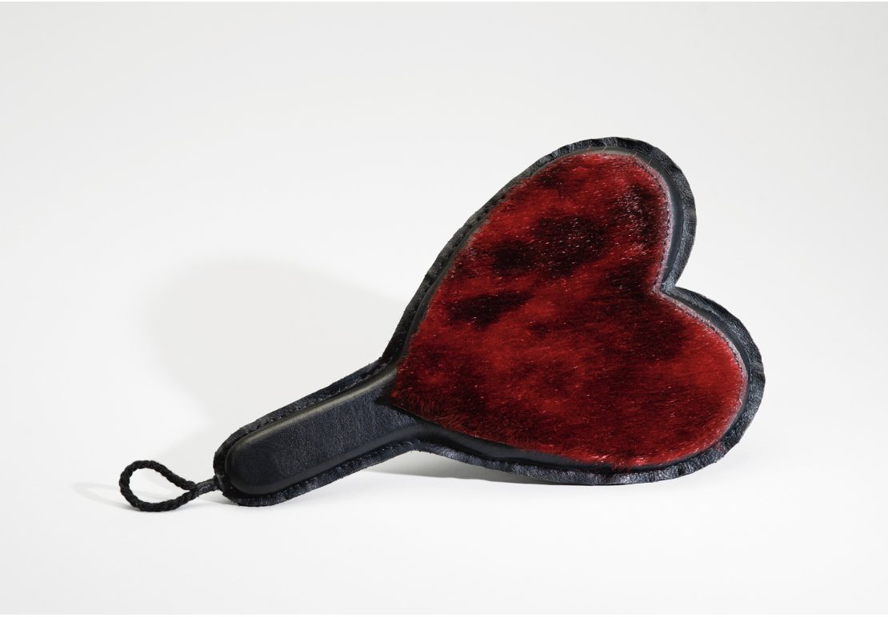
Kablusiak, Heart Paddle, 2022. Dyed sealskin, leather, artificial sinew
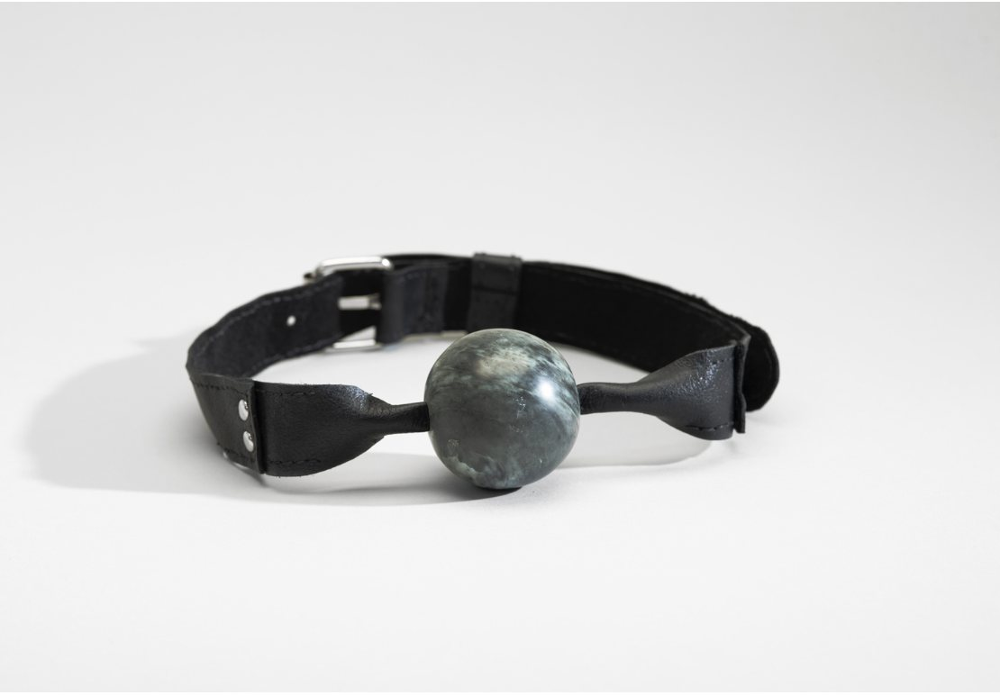
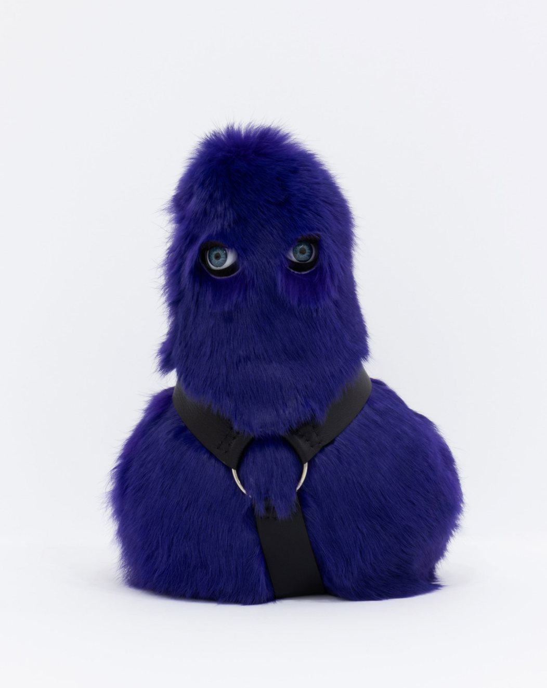
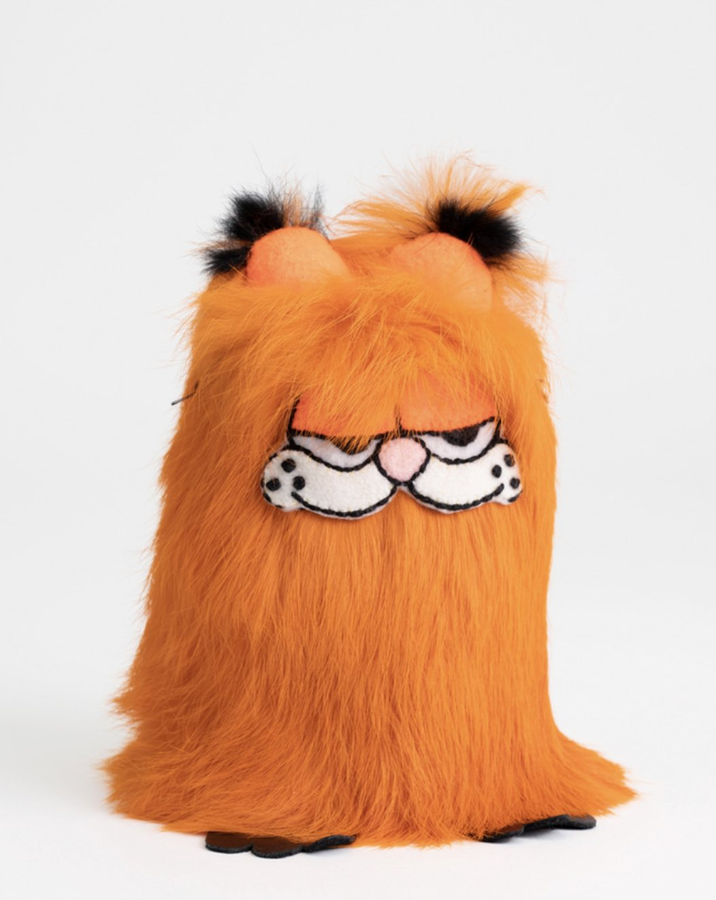
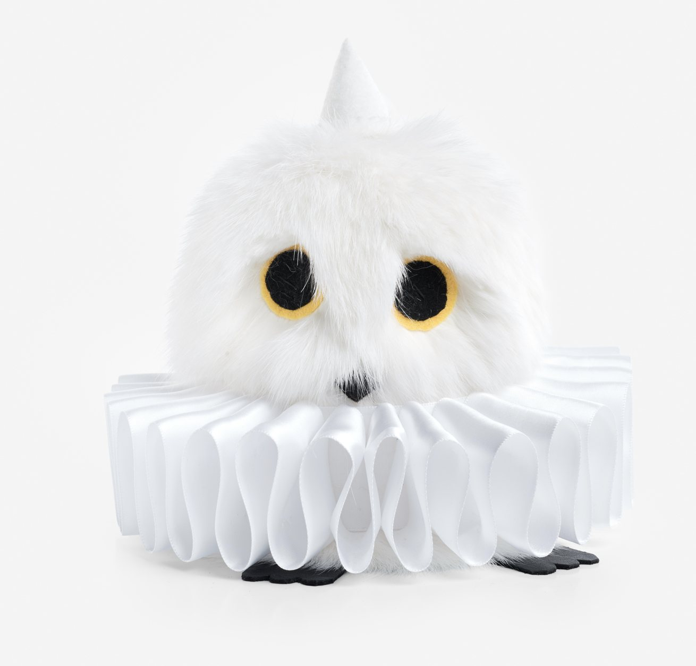
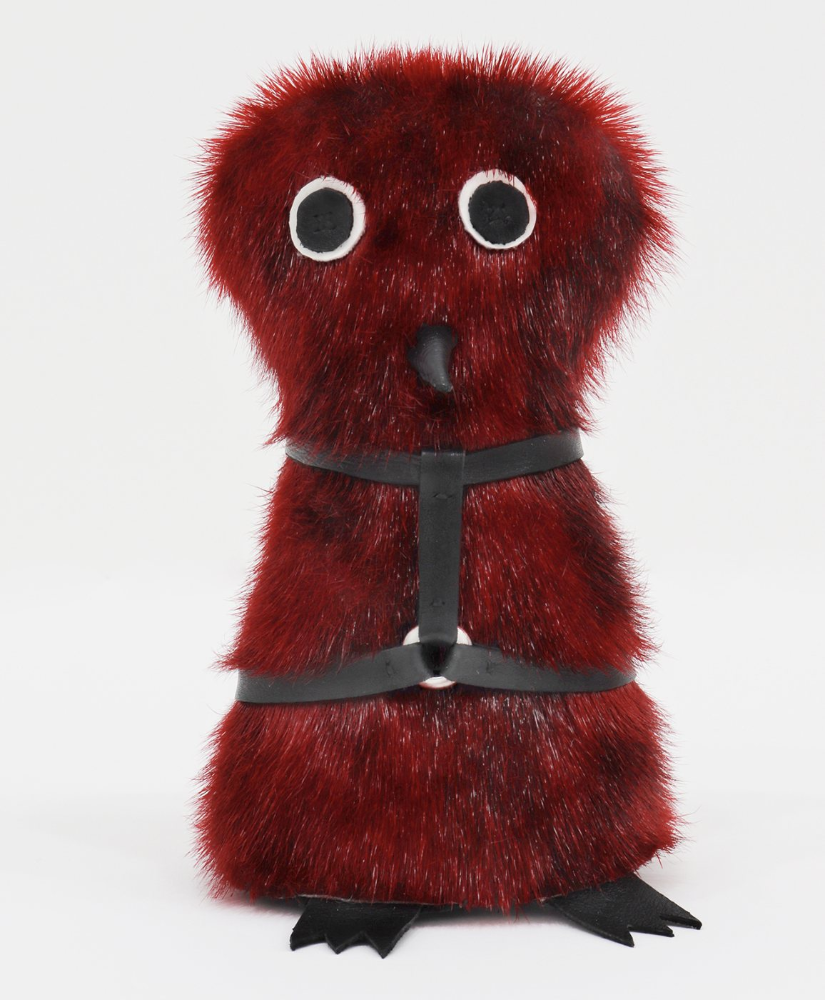
Ball Gag, 2022, soapstone, tung oil, metal hardware, leather, artificial sinew · Doll 3, 2024, rabbit fur, leather, metal hardware, plastic doll eyes · Garfield Ookpik, 2022, rabbit fur, felt, fibre fill, embroidery floss, leather · Pierrot Ukpik, 2026, white rabbit fur, felt, ribbon · Red Ookpik, 2022, dyed sealskin, felt, fibre fill, embroidery floss, leather
Kablusiak
Kablusiak explores Inuit identity, sexuality and cultural displacement, with irony, humour and real emotional weight. Their work connects textile and skin-sewing to queer and Indigenous identities.
- On view
- Heart Paddle, 2022; Ball Gag, 2022; Doll 3, 2024; Garfield Ookpik, 2022; Pierrot Ukpik, 2026; Red Ookpik, 2022
- Materials
- Dyed sealskin, soapstone, rabbit fur, leather, felt, artificial sinew, embroidery floss
- Thread
- Queerness, sexuality, cultural displacement, pop culture
- In the room
- On the round bed at the centre of the room
Heart Paddle and Ball Gag turn the materials of Inuit making towards intimacy and desire, refusing heteronormative ideas of Indigenous sexuality. The Ookpiks remake the traditional Inuit snowy-owl figure; Garfield Ookpik fuses it with the cartoon cat to comment on how pop culture appropriates Indigenous culture.
Gina Adams, from the series Broken Treaty Quilts
Gina Adams
In her Broken Treaty Quilts, Gina Adams stitches the texts of historical treaties between Indigenous nations and the United States onto antique quilts, in hand-cut calico letters that are not always easy to read.
- On view
- From the series Broken Treaty Quilts, begun in 2014
- Materials
- Hand-cut calico letters appliquéd onto antique quilts
- Thread
- Colonial violence, broken promises, dispossession
- In the room
- On the side wall, beside Igshaan Adams
By combining a domestic textile tradition with the history of broken political promises, Adams confronts colonial violence and the dispossession of Indigenous peoples.
The communal · II
Community and recognition
Traditional weaving tied to community, power and recognition: whose labour is credited, and how traditions pass between generations.
Yee I-Lann · Labay Eyong
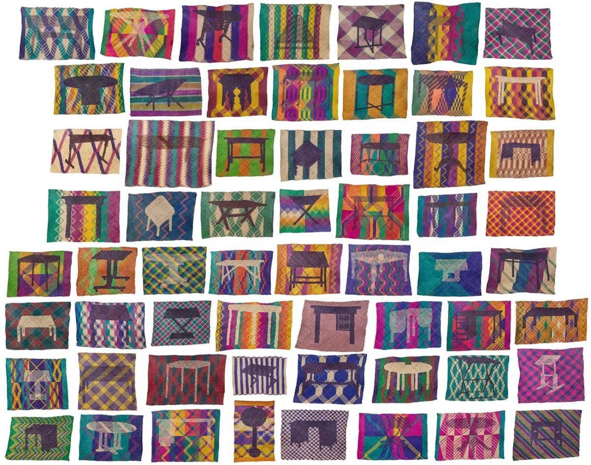
Yee I-Lann with Bajau Sama DiLaut weavers, TIKAR/MEJA, 2020. Image: Silverlens
Yee I-Lann
Since 2018 Yee I-Lann has made works with Bajau Sama DiLaut weavers on Omadal island, many of them stateless. In TIKAR/MEJA (mat/table) each of sixty mats carries the silhouette of a different table.
- On view
- TIKAR/MEJA, 2020
- Materials
- Sixty dyed, woven pandanus mats
- Thread
- Collective authorship, community, power, recognition
- In the room
- On the floor at the centre
The table stands for "colonial, patriarchal, federal, state power"; the tikar, the woven mat, is its counterpart, a shared surface without hierarchy. The 2021 credit line names nineteen weavers after Yee, most of them women. Naming them answers the invisibility of women's work only in part: the work still circulates under one name.
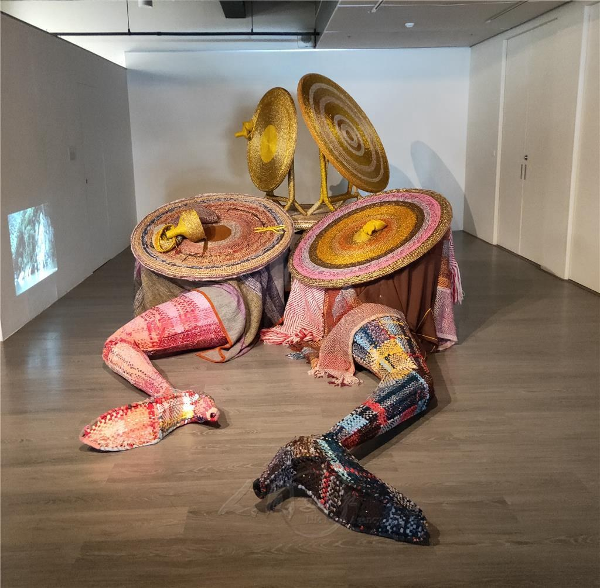
Labay Eyong, The Fallen Mother (倒地媽媽), 2020
Labay Eyong
Labay Eyong connects cultural heritage to contemporary life through Truku weaving traditions, in soft sculpture, film, metalwork and installation. Since becoming a mother in 2015 she has made her work a record of her own experience, from the birth of a child to the bond between mother and child.
- On view
- The Fallen Mother (倒地媽媽), 2020
- Thread
- Motherhood, cultural heritage, traditional craft
- In the room
- Beside Do Ho Suh's houses, near the entrance
By wrapping a plastic tabletop, a common fixture in Truku households though not tied to the culture, in traditional textiles, her work brings together domestic objects and cultural practices, showing how traditions can be adapted and transmitted across generations.
The communal · III
Labour and collective experience
Textile-making as labour, memory and shared experience, often made by many hands.
Igshaan Adams · Rucha Kulkarni · Meita Meilita
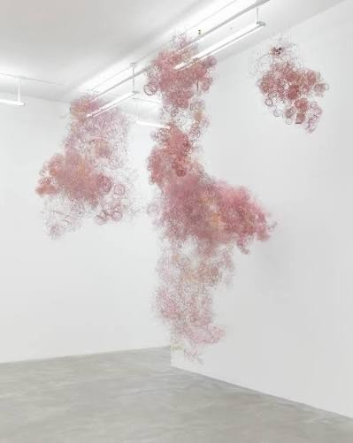
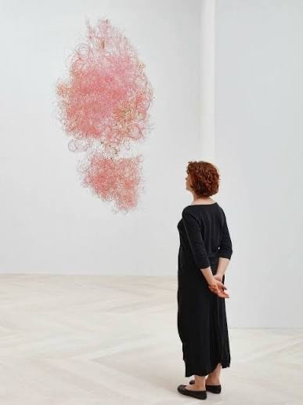
Igshaan Adams, suspended bead and wire sculptures, installation views
Igshaan Adams
Igshaan Adams grew up in Bonteheuwel, a community shaped by apartheid, and draws on memories of home and his surroundings. In works such as Lynloop (2024), thread, rope and beads create connections between places and experiences.
- On view
- Cloud-like suspended sculptures; titles to be announced
- Materials
- Beads and wire
- Thread
- Home, community, the labour of making
- In the room
- On a freestanding corner wall
Beads and wire are threaded into forms that resemble clouds or dust, so the labour of making stays visible in the work. Across his practice, materials from working-class homes and neighbourhoods carry a social history and blur the line between fine art and domestic or communal labour.
Rucha Kulkarni, installation view
Rucha Kulkarni
Rucha Kulkarni is a visual artist and social art practitioner. She approaches belonging through the Indian philosophical concept of Prakriti and the practice of stitching, linking her work to labour, memory and material histories.
- On view
- Two textile hangings; titles to be announced
- Materials
- Textile and stitching
- Thread
- Belonging, participatory making, migration
- In the room
- On the back wall, beside the alcove
In Bonds per stitch (2024–ongoing), single stitches form something larger together. Her participatory methods of storytelling, care and embodied knowledge let others help make the work, so that remembering becomes communal making: many hands, and many memories, in a single work.
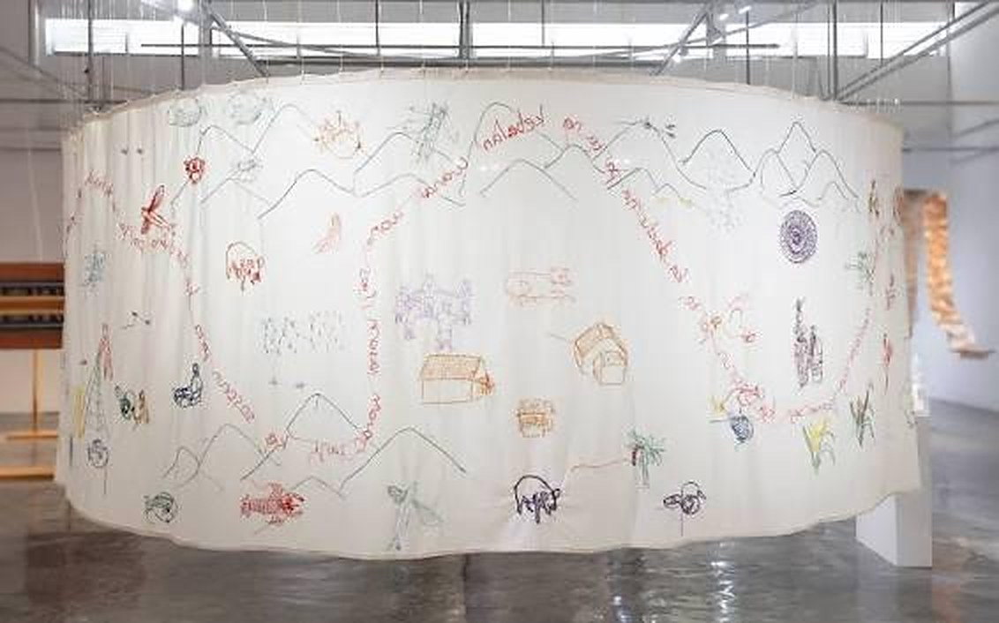
Meita Meilita, Wanai Saiji: The Shape of Being, 2025
Meita Meilita
Meita Meilita uses embroidery and participatory installations to explore womanhood, emotions and cultural memory. She draws on her own experience as a woman, child, mother and wife.
- On view
- Wanai Saiji: The Shape of Being, 2025, made with Kavalan elders and PateRongan Studio in Xinshe, Hualien, Taiwan
- Materials
- Embroidery on cotton cloth
- Thread
- Shared memory, heritage, womanhood, language
- In the room
- Curved along the back wall
Roosters, mountains, fish, boats, crabs, village scenes and lines of Kavalan song drift across a long cotton cloth, embroidered together with Kavalan elders, with large stretches left blank. Her shared embroidery treats remembering as communal making.
The personal · IV
The body and displacement
Memory carried in the body and in leaving home: organs, houses, journeys and buried belongings.
Woo Hannah · Do Ho Suh · Elfreda Dali · Hema Shironi
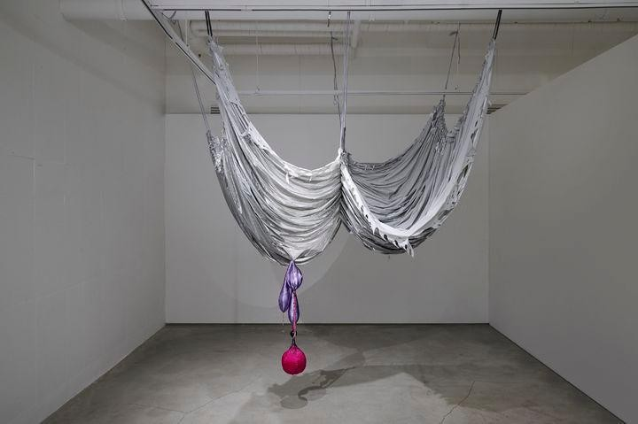
Woo Hannah, installation view
Woo Hannah
Woo Hannah creates fabric sculptures inspired by human and non-human organs, from the uterus to blood vessels, questioning conventional understandings of bodily form and identity.
- On view
- The Great Ballroom, 2023, which extends her series Milk and Honey
- Materials
- Fabric, beads, sewing
- Thread
- The body, ageing, femininity
- In the room
- Hanging in the alcove
Oversized drapes sag into U-shaped creases that Woo sees as both a bat and a woman's breast, a celebration of the female body as it ages. At Frieze Seoul they hung from an eight-metre ceiling.
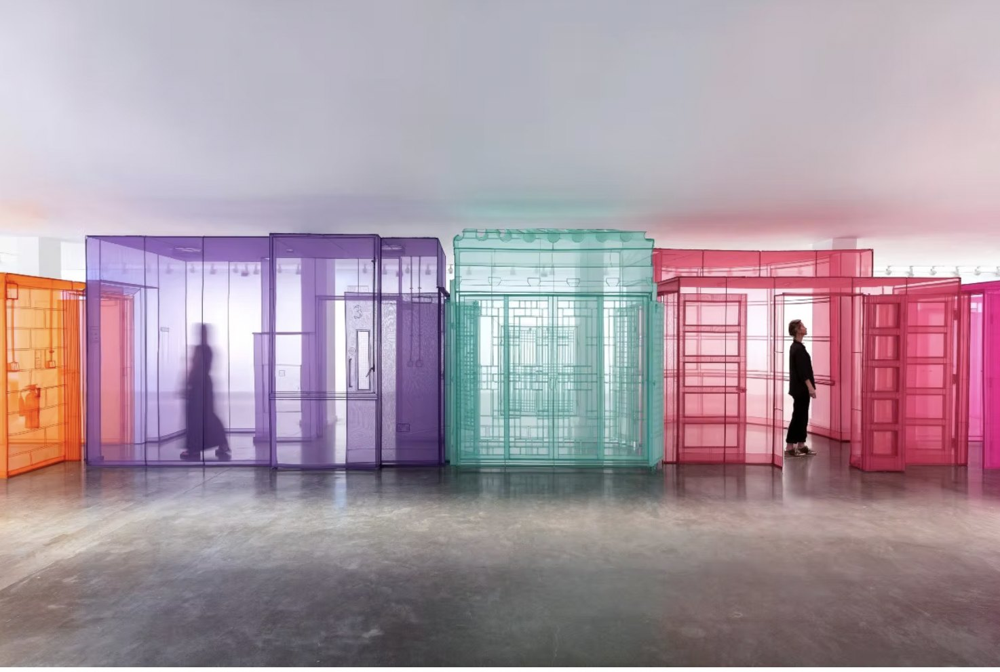
Do Ho Suh, Nest/s, 2024, installation view
Do Ho Suh
Do Ho Suh creates translucent fabric installations that reconstruct architectural spaces associated with his life, exploring how a sense of home can persist after leaving a physical place.
- On view
- Nest/s, 2024
- Materials
- Polyester and stainless steel
- Thread
- Home, displacement, belonging
- In the room
- The entrance: visitors walk through it
Nest/s stitches corridors and entryways from homes he has lived in into one long passage of colourful, sheer fabric. As the entrance to the exhibition, it introduces the relationship between architecture, memory and belonging.
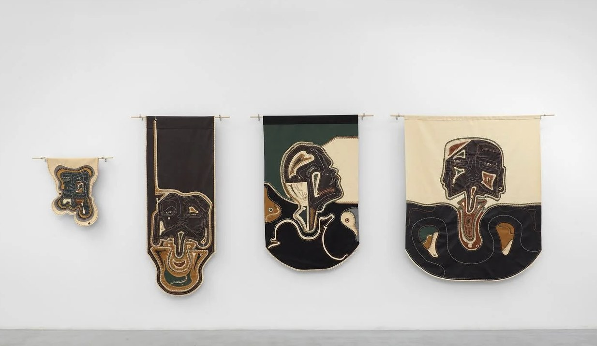
Elfreda Dali, wall hangings, installation view
Elfreda Dali
Elfreda Dali connects London and Lagos through textiles and clothing, with materials from both cities, reflecting how movement between places shapes identity.
- On view
- Wall tapestries and clothing
- Materials
- Textile and stitching, with materials from London and Lagos
- Thread
- Migration, layered identity, clothing
- In the room
- On the side wall and in the corner
Her tapestries sew the story of a heritage and trace the route of a journey she has made time and time again, so that cloth becomes something carried between two homes.
Hema Shironi, Buried Alive Stories, 2020
Hema Shironi
Hema Shironi examines domestic memory and displacement through embroidery, photographs and found fabrics, addressing Sri Lanka's histories of colonisation, civil war, displacement and migration.
- On view
- Buried Alive Stories, 2020
- Materials
- Embroidery, photographs, found fabrics
- Thread
- Domestic memory, displacement, civil war
- In the room
- On the entrance wall, beside Do Ho Suh's houses
The work draws on her grandmother's account of burying treasured possessions around the house when the family was forced to leave it during Sri Lanka's civil war (1983–2009). It shows how ordinary objects can become traces of lives disrupted by political violence.
The personal · V
Painful memories of home
Works that confront the painful experiences associated with home and memory.
Zoë Buckman
Zoë Buckman, Show Me Your Bruises, Then
Zoë Buckman
Zoë Buckman's feminist practice uses embroidery, vintage fabrics and domestic textiles to address gendered violence and trauma.
- On view
- Show Me Your Bruises, Then, 2021–22
- Materials
- Three-channel video; antique textile embroidered with an excerpt from her poem
- Thread
- Gendered violence, shame, survival
- In the room
- On the back wall, above a kitchen table and chair
The work looks at how stigma shapes survivors' experiences and how patterns of abuse can persist across generations. It challenges the association between textile-making and domestic care, turning familiar materials into a means of confronting experiences that might otherwise remain hidden.